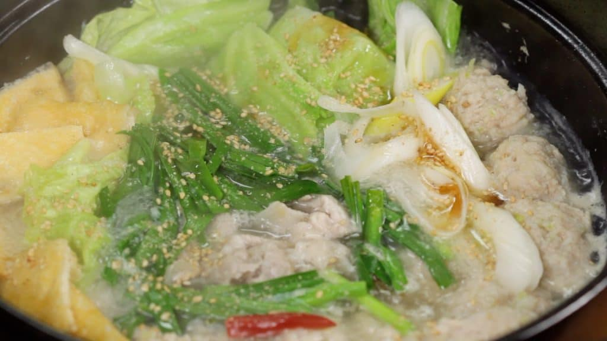

Chanko Nabe

A hearty satisfying stew. Chanko Nabe is famous for being a staple of a Sumo Wrestler's Diet.
Full of different vegetables and proteins, Chanko Nabe becomes tastier as you continue adding ingredients.
There are a pleathora of other vegetables you can add to this dish, however this recipe I used is from a youtube channel called "Cooking with Dog"
A lot of other videos, or even authentic recipes from Sumo wrestlers....they don't measure anything out. There's no point. They know how much they need to bulk
and they're gonna do it, and it's gonna be DELICIOUS. They add such a variety of greens, mushrooms, radishes, sometimes they'll add noodles or have rice on the
side. There's a pleathora of options and they all sound BOMB. But I needed a listed recipe for this ding dang assignment y'know? Follow your heart.
Cooking with Dog's Chanko Nabe!
Broth
- 600 ml Chicken Stock 600ml water + 1 tbsp chicken stock powder (Chinese-style)
- 3 tbsp Sake
- 1 tsp Salt
- 1/2 tbsp Sugar
- 1 Dried Red Chili Pepper
- 1 Garlic Clove
Chicken Meatballs
- 200g Ground Chicken
- 1/4 tsp Salt/Pepper
- 1/2 tsp Sake
- 20g Grated Ginger Root
- 60g Long Green Onion
- 1 tbsp Potato Starch
Other Ingredients
- 100g Extra thin Pork Slices (or Protein of choice)
- 1 Aburaage (Thin deep fried Tofu)
- 3-4 Cabbage Leaves
- 1 Long green Onion
- 1 bundle Garlic Chives
- 1-2 tbsp Toasted White Sesame Seeds
- Sesame Oil
LET'S MAKE MAGIC
- Let's prepare the aburaage, thin deep-fried tofu. Remove the excess oil with a paper towel. Lightly warming the aburaage in a microwave beforehand will help remove the oil. Cut the aburaage into bite-size pieces.
- Remove the firm stalk from the cabbage leaves. Slice the stalk thinly so that you can use it in stir-fried dishes later. Roughly cut the leaves into smaller pieces.
- Cut the garlic chives into 5cm (2") pieces and separate the leaf part and stalk part, and slice the long green onion into 1cm (0.4") slices diagonally.
- Halve the dried red chili pepper, and remove the seeds.
- Let's prepare the chicken meatballs. Place the ground chicken in a bowl, and add the salt, pepper, sake and grated ginger root. Squish the meat with your hand to mix thoroughly.
- Then, add the chopped long green onion and potato starch.
- Loosely spread your fingers forming a rake shape, and mix the meat mixture until it turns gooey.
- Now, let's make the Chankonabe using an earthen pot. Combine the chicken stock, sake, salt, sugar and grated garlic clove. Lightly stir the broth. Add the dried red chili pepper, and turn the heat to medium.
- When it begins to boil, cook the chicken meatballs also known as Tori Dango.
- Shape the ground chicken into a bite-size ball with a spoon, and drop the tori dango into the broth. Dampening the spoon will help keep the meat from sticking.
- Repeat the process and place all the meatballs into the pot.
- At first, the meatballs will sink to the bottom, but they should begin to float to the surface when cooked.
- Remove the foam, but the grated garlic is also on the surface so be sure not to remove it.
- Add the aburaage, thin deep-fried tofu, cabbage leaves, long green onion, the stalk part of the garlic chives, and the extra-thin pork slices. We are using the pork slices for shabu-shabu, a Japanese hot pot dish.
- When all the redness in the pork has disappeared, add the leaf part of the garlic chives.
- Sprinkle on the ground white sesame seeds. Finally, drizzle on the sesame oil.
- Place the ingredients in a bowl and enjoy the delicious chankonabe. When the broth is reduced, add chicken stock and adjust the taste with salt.